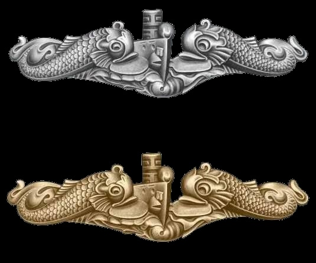
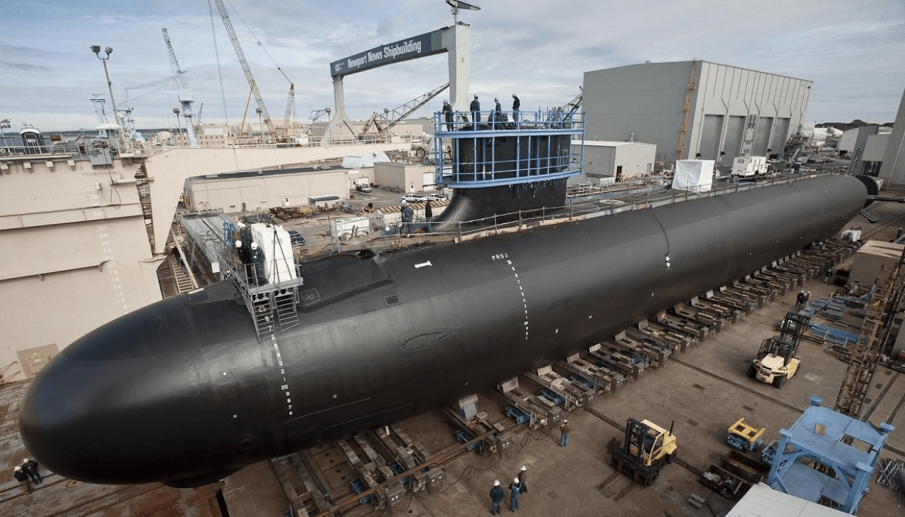

The Submarine Force
The Silent Service

Four Cool Facts About Submarines:

-
All of the US Navy's submarines are powered by nuclear reactors
This means they can stay submerged virtually indefinitely.
-
The navy has two types of submarines: fast attack submarines for
offensive ASW and boomer submarines for nuclear deterrance.
-
One boomer submarine carries enough nuclear missles to be the fifth
largest nuclear navy on earth if it were an independent nation.
-
All US Navy submarines are longer than a football field.
More submarine resources:

To contact the owner of this page email:
Charlie Francesconi: m251806@usna.edu